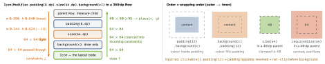

cross-platform · folio
In one line: Layout is one pass: a parent hands each child Constraints (min/max
width, height), the child is measured once and reports a size, the parent
places it. A Modifier chain wraps outer → inner; each link may change the
constraints going down and the size coming up — order is behaviour.
Download PDF Print view LaTeX source


Measure → size → place
MeasurePolicygets(measurables, constraints);measure()twice on one child throws — single pass is enforced, so deep nesting is cheap (unlike nestedRelativeLayout).- Tight = min = max (
Constraints.fixed); loose = min 0; unbounded = maxInfinity(in a scrollable). layout(w, h) { p.placeRelative(x, y) }—placeRelativemirrors in RTL,placedoes not. A size outside the constraints is coerced + centred.
Size modifiers & intrinsics
size= a preference coerced into incoming constraints; the first tight one wins:size(100).size(50)= 100.requiredSizeignores them.fillMaxWidth(f): min = max =f·max.wrapContentSize(): min → 0 + align — a child smaller than a tight parent.weight(w): unweighted children measured first, the rest split by weight (fill = false= a cap).Box:matchParentSize()takes the size after siblings set it;fillMaxSize()helps set it.Row(Modifier.height(IntrinsicSize.Min))asks childrenminIntrinsicHeightbefore measuring, so afillMaxHeight()divider matches the tallest text. A query, not a measure — but a second walk. A customLayout’s default intrinsics are approximated: override them.
Example — a custom Layout
@Composable fun Stack(modifier: Modifier = Modifier,
content: @Composable () -> Unit) =
Layout(content, modifier) { measurables, constraints ->
val loose = constraints.copy(minWidth = 0, minHeight = 0)
val ps = measurables.map { it.measure(loose) } // once each
val w = (ps.maxOfOrNull { it.width } ?: 0)
.coerceIn(constraints.minWidth, constraints.maxWidth)
val h = ps.sumOf { it.height }
.coerceIn(constraints.minHeight, constraints.maxHeight)
layout(w, h) { // report size
var y = 0
ps.forEach { it.placeRelative(0, y); y += it.height }
}
}One wrapped node only? Modifier.layout { m, c -> …} (measure it, add an offset/baseline gap). vs SwiftUI Layout: a proposal is a suggestion and a subview may be asked sizeThatFits several times; Compose constraints are hard bounds and each child is measured once.
SubcomposeLayout & BoxWithConstraints
SubcomposeLayoutcomposes during layout — children exist only once constraints are known (LazyColumn,Scaffold,BoxWithConstraints). Composition moves into the layout pass; a new constraint re-subcomposes.- Use it only when the tree depends on size (1 vs 2 panes); to position by size use
Layout.onSizeChanged+ state write = a frame late.
Modifier.Node, not composed{}
composed{} runs composition per use site, allocates, never skips. A Modifier.Node lives long; its ModifierNodeElement (create, update, equals/hashCode — a data class) is diffed and update() mutates the node. Roles: LayoutModifierNode, DrawModifierNode, PointerInputModifierNode, SemanticsModifierNode.
fun Modifier.circle(c: Color) = this then CircleEl(c)
private data class CircleEl(val c: Color) :
ModifierNodeElement<CircleNode>() {
override fun create() = CircleNode(c)
override fun update(node: CircleNode) { node.c = c } }
private class CircleNode(var c: Color) :
Modifier.Node(), DrawModifierNode {
override fun ContentDrawScope.draw() { drawCircle(c); drawContent() } }Moving things & lazy lists
- Animating
padding/size/offset(x.dp)→ relayout, neighbours move.graphicsLayer { translationX; scaleX; alpha }transforms the drawn layer only — no remeasure; a scaled item keeps its old slot. key = { it.id }(Bundle-able) keeps item state across inserts;contentTypereuses same-type compositions;Modifier.animateItem()(fade + placement, needs keys) replacedanimateItemPlacement.
Traps
LazyColumnin averticalScroll→ crash: infinite max height. Use one lazy list with severalitem{}s.- “
size(50)is 50” — not afterfillMaxSize(): the min wins. - No margin API: padding before background is the margin.
Remember: constraints down, sizes up, place last · measure once · order = wrapping · move with graphicsLayer.